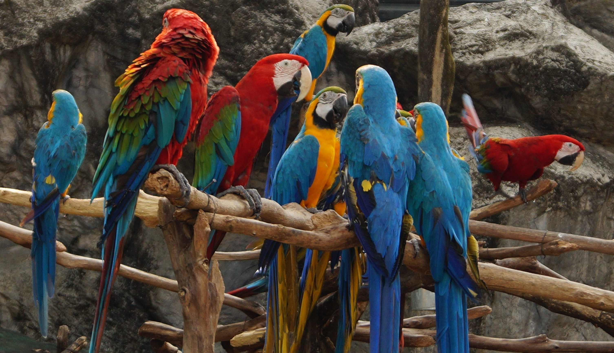
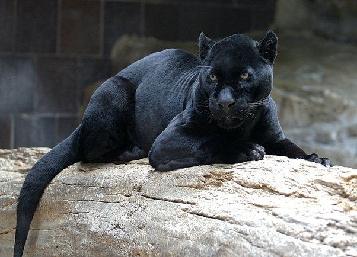
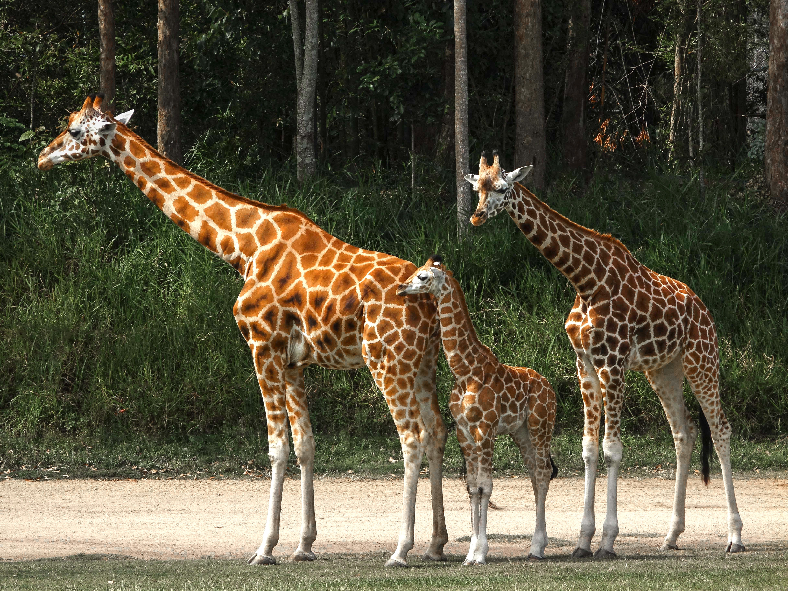

Here is some information about a few Animals at our zoo!
 Leopard
Leopard
Leopard's eating regimen incorporates wild hog, deer and rodents. Be that as it may, a decline in its prey species, along with poaching and environment misfortune, has caused significant damage. This feline may before long be terminated in nature.
The Sri Lankan leopard is the most clandestine and enigmatic of the enormous carnivores, and furthermore the most cunning as well. It is the most fastest and heftiest climber of the bigger felines and is capable of capturing prey far bigger than itself.
The Sri Lankan leopard also known as "DIVIYA" is an endangered species and naturally found in hill country areas and isolated forests.
("Hover on the image to elarge it")

Macaw
Macaws are enormous individuals from the parrot family found all through Central and South America. Their brilliant shadings and uproarious vocalizations are significant devices for correspondence Blue-and-yellow macaws, in the same way as other different parrots, mate with only one parrot for a period of time.
In the same way as other parrots, macaws are seemingly perpetual, some of the time as long as 50 years even though , generally they have a life expectancy of 30-45 years. Macaws are usually found in the pet exchange.
("Hover on the image to elarge it")

Sri Lankan Black Panther
A smart and cunning animal that can stow away and hunt its prey effectively, particularly around night time due to its color which helps in camoflauging itself in the thick forest, it is a color variant of the jaguar and the leopard.
The Sri Lankan BLack Panther is an extinct species in Sri Lanka and cannot be found any where else. It is said that only a handful of black panthers have been spotted during the last few decades.
("Hover on the image to elarge it")
 Giant Panda
Giant Panda
The giant panda is natively from the thick bamboo forests in Sourth Central China. These reserved creatures are generally excellent tree climbers and awesome swimmers.A panda generally eats while sitting upstanding, in a represent that looks like how people sit on the floor. This stance leaves the forepaws allowed to get a handle on bamboo stems with the assistance of a "pseudo thumb," shaped by an extended and expanded wrist bone covered with a plump cushion of skin.
The panda additionally utilizes its incredible jaws and solid teeth to pulverize the extreme, sinewy bamboo into bits.
Did you know ?
-Periodically they eat other vegetation, fish, or little creatures, yet bamboo accounts 99% of their daily diet.
("Hover on the image to elarge it")

Giraffe
The giraffe is the tallest creature on Earth. A male giraffe towers up to nineteen feet over the ground. Giraffes live in eastern, focal and southern Africa. They range across savannah, prairies, and open woods looking for trees – particularly their top choice, acacias – to take care of upon.
Giraffes burn through most of their energy and time by eating. Their amazing stature grants them to examine on leaves that other plant eaters are unable to reach. Giraffes twist their long, dim tongues encircling the leaves or new shoots in the upper pieces of trees and maneuver them into their mouths. They moreover scrutinize on leaves closer to the ground and may similarly eat verdant food varieties, soil that is ample in minerals. A giraffe can eat far in excess of 100 pounds of food every day.
("Hover on the image to elarge it")
 Gorilla
Gorilla
Gorillas are fundamentally herbivorous, eating the leaves and stems of spices, bushes and plants. They likewise eat the plump products of near 100 occasionally fruiting tree species. Other gorilla subspecies eat relatively less natural product. Gorillas get some protein from spineless creatures found on leaves and natural products. Grown-up male gorillas eat around 32 kg of food each day. Females eat around 66% of that sum.
Gorillas are entirely covered with slender, short , dark grey to dark brown hair apart from their face. A little white tuft of hair on their back end helps their parents to recognize their newborn children as long as four years of age. The white fix helps the mother monitor the baby and helps other gathering individuals in recognizing the gorilla as a newborn child.
("Hover on the image to elarge it")